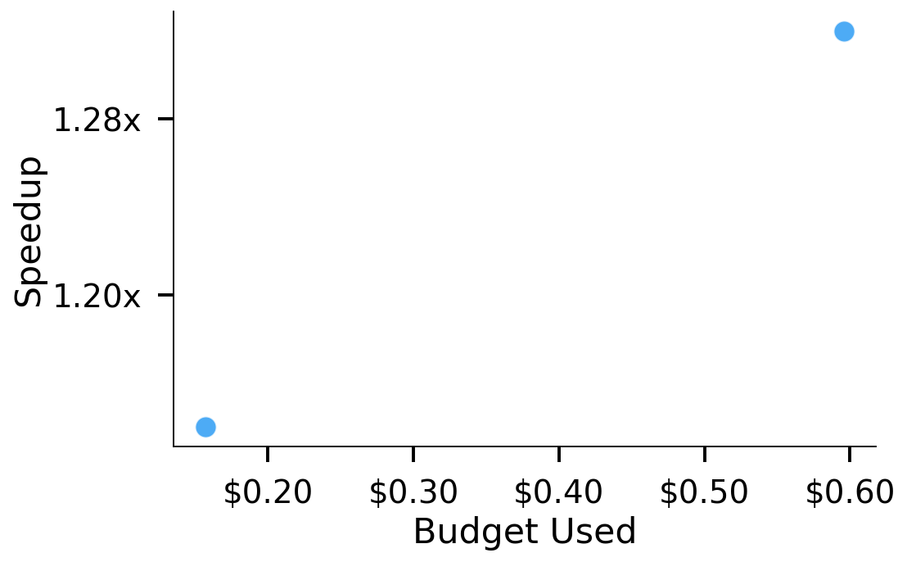
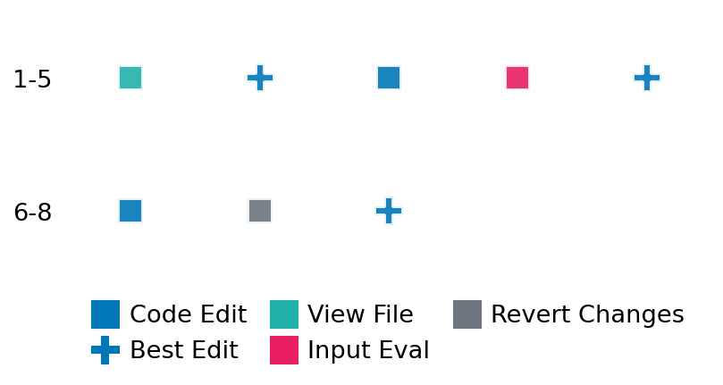

SETTING:
You're an autonomous programmer tasked with solving a specific problem. You are to use the commands defined below to accomplish this task. Every message you send incurs a cost—you will be informed of your usage and remaining budget by the system.
You will be evaluated based on the best-performing piece of code you produce, even if the final code doesn't work or compile (as long as it worked at some point and achieved a score, you will be eligible).
Apart from the default Python packages, you have access to the following additional packages:
- cryptography
- cvxpy
- cython
- dace
- dask
- diffrax
- ecos
- faiss-cpu
- hdbscan
- highspy
- jax
- networkx
- numba
- numpy
- ortools
- pandas
- pot
- psutil
- pulp
- pyomo
- python-sat
- pythran
- scikit-learn
- scipy
- sympy
- torch
YOUR TASK:
Your objective is to define a class named `Solver` in `solver.py` with a method:
```
class Solver:
def solve(self, problem, **kwargs) -> Any:
"""Your implementation goes here."""
...
```
IMPORTANT: Compilation time of your init function will not count towards your function's runtime.
This `solve` function will be the entrypoint called by the evaluation harness. Strive to align your class and method implementation as closely as possible with the desired performance criteria.
For each instance, your function can run for at most 10x the reference runtime for that instance. Strive to have your implementation run as fast as possible, while returning the same output as the reference function (for the same given input). Be creative and optimize your approach!
Your messages should include a short thought about what you should do, followed by a _SINGLE_ command. The command must be enclosed within ``` and ```, like so:
<Reasoning behind executing the command>
```
<command>
```
IMPORTANT: Each set of triple backticks (```) must always be on their own line, without any other words or anything else on that line.
Here are the commands available to you. Ensure you include one and only one of the following commands in each of your responses:
- `edit`: Replace a range of lines with new content in a file. This is how you can create files: if the file does not exist, it will be created. Here is an example:
```
edit
file: <file_name>
lines: <start_line>-<end_line>
---
<new_content>
---
```
The command will:
1. Delete the lines from <start_line> to <end_line> (inclusive)
2. Insert <new_content> starting at <start_line>
3. If both <start_line> and <end_line> are 0, <new_content> will be prepended to the file
Example:
edit
file: solver.py
lines: 5-7
---
def improved_function():
print("Optimized solution")
---
- `ls`: List all files in the current working directory.
- `view_file <file_name> [start_line]`: Display 100 lines of `<file_name>` starting from `start_line` (defaults to line 1).
- `revert`: Revert the code to the best-performing version thus far.
- `reference <string>`: Query the reference solver with a problem and receive its solution. If the problem's input is a list, this command would look like:
```
reference [1,2,3,4]
```
- `eval_input <string>`: Run your current solver implementation on the given input. This is the only command that shows stdout from your solver along with both solutions. Example:
```
eval_input [1,2,3,4]
```
- `eval`: Run evaluation on the current solution and report the results.
- `delete`: Delete a range of lines from a file using the format:
```
delete
file: <file_name>
lines: <start_line>-<end_line>
The command will delete the lines from <start_line> to <end_line> (inclusive)
Example:
delete
file: solver.py
lines: 5-10
```
- `profile <filename.py> <input>`: Profile your currently loaded solve method's performance on a given input. Shows the 25 most time-consuming lines. Requires specifying a python file (e.g., `solver.py`) for validation, though profiling runs on the current in-memory code.
Example:
```
profile solver.py [1, 2, 3]
```
- `profile_lines <filename.py> <line_number1, line_number2, ...> <input>`: Profiles the chosen lines of the currently loaded code on the given input. Requires specifying a python file for validation.
Example:
```
profile_lines solver.py 1,2,3 [1, 2, 3]
```
**TIPS:**
After each edit, a linter will automatically run to ensure code quality. If there are critical linter errors, your changes will not be applied, and you will receive the linter's error message. Typically, linter errors arise from issues like improper indentation—ensure your edits maintain proper code formatting.
**Cython Compilation:** Edits creating or modifying Cython (`.pyx`) files will automatically trigger a compilation attempt (requires a `setup.py`). You will be notified if compilation succeeds or fails. If it fails, the edit to the `.pyx` file will be automatically reverted.
If the code runs successfully without errors, the in-memory 'last known good code' will be updated to the new version. Following successful edits, you will receive a summary of your `solve` function's performance compared to the reference.
If you get stuck, try reverting your code and restarting your train of thought.
Do not put an if __name__ == "__main__": block in your code, as it will not be ran (only the solve function will).
Keep trying to better your code until you run out of money. Do not stop beforehand!
**GOALS:**
Your primary objective is to optimize the `solve` function to run as as fast as possible, while returning the optimal solution.
You will receive better scores the quicker your solution runs, and you will be penalized for exceeding the time limit or returning non-optimal solutions.
Below you find the description of the task you will have to solve. Read it carefully and understand what the problem is and what your solver should do.
**TASK DESCRIPTION:**
Solving an L1 proximal operator or projecting a point onto L1 ball involves the following optimization problem:
min_w ‖v-w‖² s.t. ‖w‖₁ ≤ k
where
v is the given vector of n real numbers
‖.‖ is an l2 norm
‖.‖₁ is an l1 norm, i.e. sum of absolute values of a vector;
k is a user-defined constant
Given input parameters v and k, compute and return the n-dimensional solution vector w that solves the above problem.
Input: A dictionary with keys:
- "v": A list of n real numbers representing the vector v.
- "k": hyperparameter that controls pruning severity
Example input:
{
"v": [2., -2., -0.5, 0.5],
"k": 1
}
Output: A dictionary with keys:
- "solution": A list of n numbers representing the optimal solution w*.
Example output:
{
"solution": [0.8333, -0.8333, 0.0, 0.0]
}
Category: convex_optimization
Below is the reference implementation. Your function should run much quicker.
import random
from typing import Any
import numpy as np
| 01: def solve(self, problem: dict[str, Any]) -> dict[str, list]:
| 02: """
| 03: Solve the problem using the algorithm described in https://doi.org/10.1109/CVPR.2018.00890.
| 04:
| 05: This optimization problem is a Quadratic Program (QP).
| 06: However, it can be solved exactly in O(nlogn).
| 07:
| 08: :param problem: A dictionary of the problem's parameters.
| 09: :return: A dictionary with key:
| 10: "solution": a 1D list with n elements representing the solution to the l1_pruning task.
| 11:
| 12:
| 13: NOTE: Your solution must pass validation by:
| 14: 1. Returning correctly formatted output
| 15: 2. Having no NaN or infinity values
| 16: 3. Matching expected results within numerical tolerance
| 17: """
| 18: v = np.array(problem.get("v"))
| 19: k = problem.get("k")
| 20:
| 21: # Ensure v is a column vector
| 22: v = v.flatten()
| 23:
| 24: def subproblem_sol(vn, z):
| 25: mu = np.sort(vn, kind="mergesort")[::-1]
| 26: cumsum = 0
| 27: theta = 0
| 28: for j in range(len(mu)):
| 29: cumsum += mu[j]
| 30: if mu[j] < 1 / (j + 1) * (cumsum - z):
| 31: theta = 1 / (j + 1) * (cumsum - z)
| 32: break
| 33: w = np.maximum(vn - theta, 0)
| 34: return w
| 35:
| 36: u = np.abs(v)
| 37: b = subproblem_sol(u, k)
| 38: new_v = b * np.sign(v)
| 39: remaining_indx = new_v != 0
| 40: pruned = np.zeros_like(v)
| 41: pruned[remaining_indx] = new_v[remaining_indx]
| 42:
| 43: solution = {"solution": pruned.tolist()}
| 44: return solution
| 45:
This function will be used to check if your solution is valid for a given problem. If it returns False, it means the solution is invalid:
import random
from typing import Any
import numpy as np
| 01: def is_solution( problem: dict[str, Any], solution: dict[str, list]) -> float:
| 02: """
| 03: Validate the solution to the l1_pruning problem.
| 04:
| 05: :param problem: A dictionary representing the problem.
| 06: :param solution: A dictionary containing the proposed solution with key "solution"
| 07: :return: True if solution is valid and optimal, False otherwise.
| 08: """
| 09: proposed_solution = solution.get("solution")
| 10: if proposed_solution is None:
| 11: logging.error("Problem does not contain 'solution'.")
| 12: return False
| 13:
| 14: real_solution = solve(problem).get("solution")
| 15:
| 16: if not np.allclose(proposed_solution, real_solution, atol=1e-6):
| 17: logging.error(
| 18: "Proposed solution does not match the ground-truth solution within tolerance."
| 19: )
| 20: return False
| 21:
| 22: # All checks passed; return True
| 23: return True
| 24:
 AlgoTuner Trajectory
AlgoTuner Trajectory
AlgoTune Task:
l1_pruning
Model:
Claude Opus 4
Speedup
1.387x
Total Budget
$1.00
Initial System Prompt
AlgoTune Task Description
Solving an L1 proximal operator or projecting a point onto L1 ball involves the following optimization problem:
min_w ‖v-w‖² s.t. ‖w‖₁ ≤ k
where
v is the given vector of n real numbers
‖.‖ is an l2 norm
‖.‖₁ is an l1 norm, i.e. sum of absolute values of a vector;
k is a user-defined constant
Given input parameters v and k, compute and return the n-dimensional solution vector w that solves the above problem.
Input: A dictionary with keys:
- "v": A list of n real numbers representing the vector v.
- "k": hyperparameter that controls pruning severity
Example input:
{
"v": [2., -2., -0.5, 0.5],
"k": 1
}
Output: A dictionary with keys:
- "solution": A list of n numbers representing the optimal solution w*.
Example output:
{
"solution": [0.8333, -0.8333, 0.0, 0.0]
}
Category: convex_optimization
Reference Implementation
import random
from typing import Any
import numpy as np
def solve(self, problem: dict[str, Any]) -> dict[str, list]:
"""
Solve the problem using the algorithm described in https://doi.org/10.1109/CVPR.2018.00890.
This optimization problem is a Quadratic Program (QP).
However, it can be solved exactly in O(nlogn).
:param problem: A dictionary of the problem's parameters.
:return: A dictionary with key:
"solution": a 1D list with n elements representing the solution to the l1_pruning task.
NOTE: Your solution must pass validation by:
1. Returning correctly formatted output
2. Having no NaN or infinity values
3. Matching expected results within numerical tolerance
"""
v = np.array(problem.get("v"))
k = problem.get("k")
# Ensure v is a column vector
v = v.flatten()
def subproblem_sol(vn, z):
mu = np.sort(vn, kind="mergesort")[::-1]
cumsum = 0
theta = 0
for j in range(len(mu)):
cumsum += mu[j]
if mu[j] < 1 / (j + 1) * (cumsum - z):
theta = 1 / (j + 1) * (cumsum - z)
break
w = np.maximum(vn - theta, 0)
return w
u = np.abs(v)
b = subproblem_sol(u, k)
new_v = b * np.sign(v)
remaining_indx = new_v != 0
pruned = np.zeros_like(v)
pruned[remaining_indx] = new_v[remaining_indx]
solution = {"solution": pruned.tolist()}
return solutionBest AlgoTuner-Generated Code
solver.py
import numpy as np
from typing import Any
class Solver:
def solve(self, problem: dict[str, Any]) -> dict[str, list]:
"""
Solve the L1 proximal operator problem:
min_w ‖v-w‖² s.t. ‖w‖₁ ≤ k
Using an optimized version of the algorithm from https://doi.org/10.1109/CVPR.2018.00890
"""
v = np.array(problem["v"], dtype=np.float64)
k = problem["k"]
# Work with absolute values
u = np.abs(v)
# If sum of absolute values is <= k, no thresholding needed
if u.sum() <= k:
return {"solution": v.tolist()}
# Sort in descending order using the fastest sorting algorithm
mu = np.sort(u, kind='heapsort')[::-1]
# Vectorized computation to find threshold
n = len(mu)
cumsum = np.cumsum(mu)
j_range = np.arange(1, n + 1)
thresholds = (cumsum - k) / j_range
# Find the first index where mu[j] < threshold[j]
mask = mu < thresholds
if mask.any():
j = np.argmax(mask)
theta = thresholds[j]
else:
theta = 0.0
# Apply soft thresholding vectorized
w = np.where(u > theta, (u - theta) * np.sign(v), 0.0)
return {"solution": w.tolist()}Speedup vs Budget Plot
Speedup vs Budget

Action Sequence
